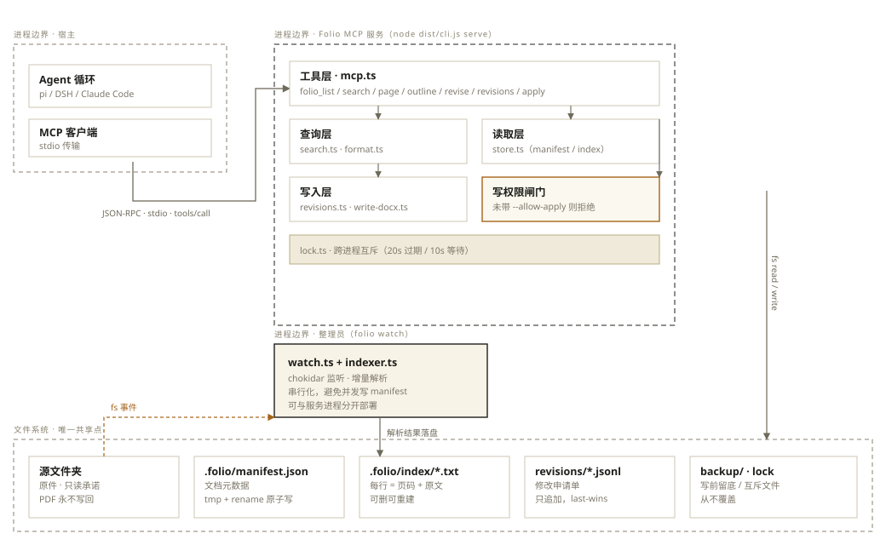
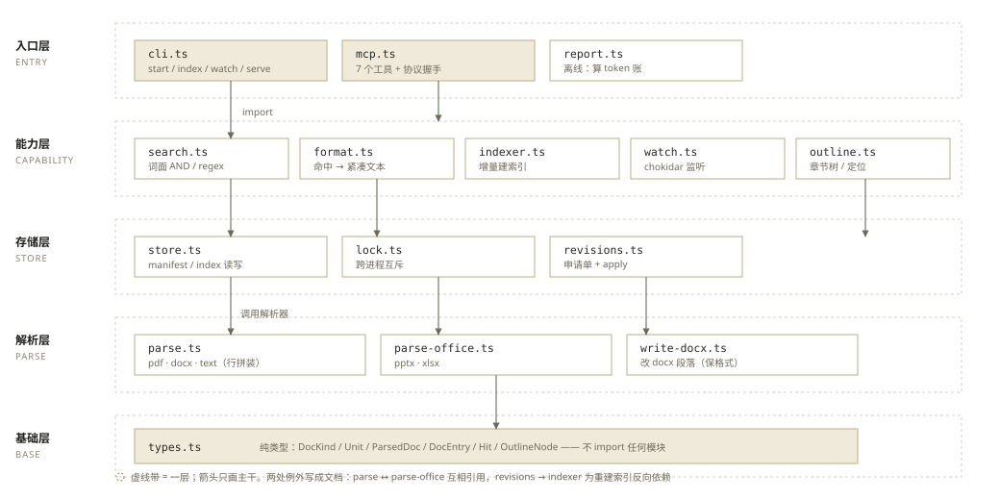
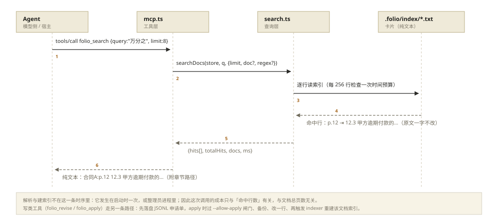

Folio · 架构说明
三个视角：进程与边界（谁在跑、跨不跨进程）、模块与依赖（代码怎么分层、谁依赖谁）、时序（一次搜索到底经过哪几步）。图里的方框是组件，箭头是调用或数据流向，虚线框是边界。
部署视图：两个常驻/按需进程 · 一条 MCP 连接 · 一个共享的索引目录

.folio/ 目录，用文件锁串行化写入。代码视图：16 个源文件 · 依赖只能向下，箭头方向 = import 方向

cli.ts 与 mcp.ts），中间是能力（查询、索引、修订），底层是无副作用的解析器与纯类型。唯一的环由 types.ts 打破——它谁也不 import。folio_search 的时序交互视图：从模型发起到拿到带页码的命中行，中间不发生全文件读取

组件之间只用三种落盘格式，全部是纯文本，可 git diff、可手改
| 文件 | 结构 | 谁写 | 不变量 |
|---|---|---|---|
manifest.json |
{version, root, updatedAt, docs:{[doc]:{kind,sourcePath,size,mtimeMs,unitKind,units,lines,chars,tables[],outline[],warnings[]}}} |
indexer | key 恒为文档名（含扩展名）；写入走 tmp+rename |
index/<doc>.txt |
每行 <label>\t<原文一行>，label ∈ p.N / ¶N / sl.N / sh.<表名> |
store | 行序即原文档顺序；不含摘要、不含改写 |
revisions/<doc>.jsonl |
每行 {id,doc,target,action,text,reason,status,createdAt}，同 id 后写覆盖 |
revisions | 只追加；applied 之后不可再改 |
backup/<name>.<ts>.bak |
写入前的原文件字节 | revisions | 每次 apply 一份，从不覆盖 |